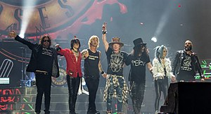

Guns & Roses
Guns N' Roses, often abbreviated as GNR, is an American hard rock band from Los Angeles, California, formed in 1985. The lineup, when first signed to Geffen Records in 1986, consisted of vocalist Axl Rose, lead guitarist Slash, rhythm guitarist Izzy Stradlin, bassist Duff McKagan, and drummer Steven Adler. Guns N' Roses has released six studio albums, accumulating sales of more than 100 million records worldwide, including 45 million in the United States, making them the 41st best-selling artist of all time.
- I remember one of their songs was in a movie trailer for Sponge Out Of Water
- Not actually my favorite band, I don't have a favorite band, but I liked their music
- Some of their songs, "Welcome To The Jungle", "Paradise City"
- My mom ALSO liked their music when she was my age
- They got bad after the 80's apparently
Reception
Guns N' Roses was inducted into the Rock and Roll Hall of Fame on April 14, 2012 in its first year of eligibility. The group is one of the world's best-selling bands of all time, having sold more than 100 million records worldwide, including shipments of 45 million in the United States. The U.S. release of the PlayStation game Mega Man X5 had the names of the game's bosses changed in honor of the band.